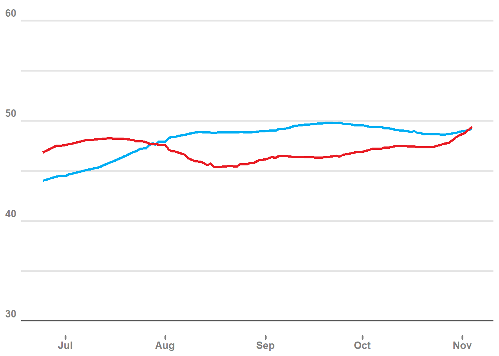
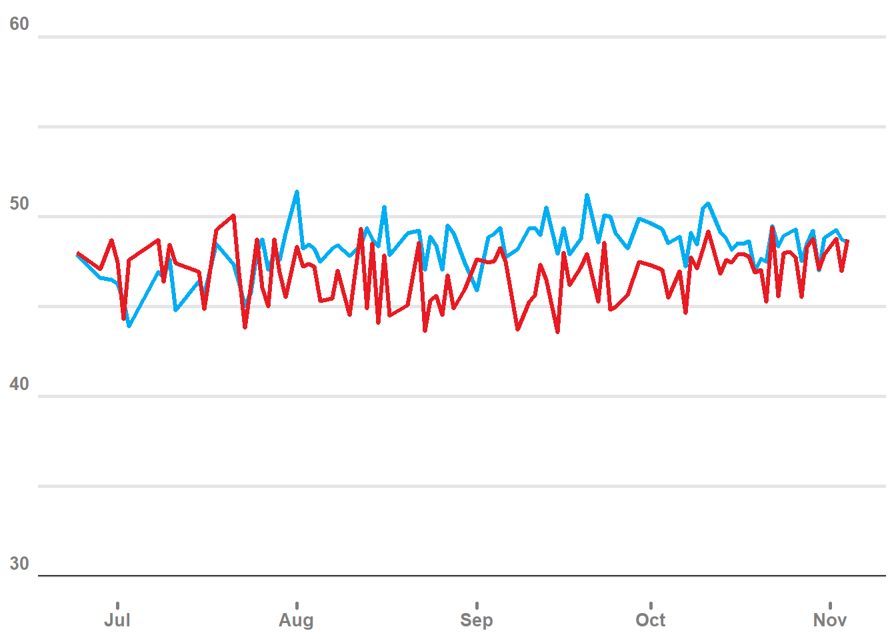
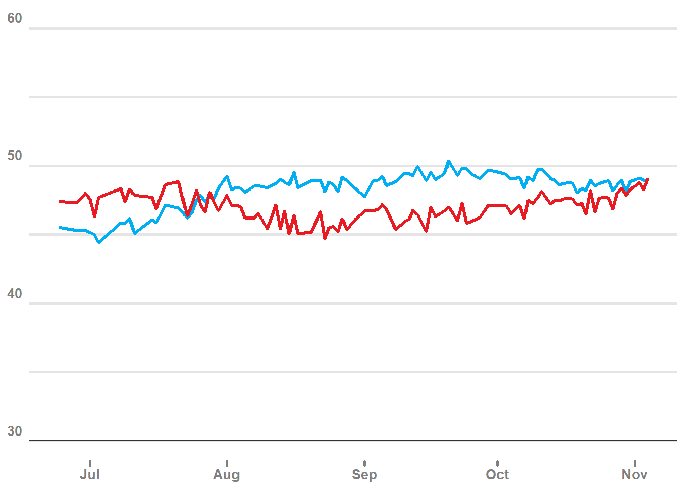
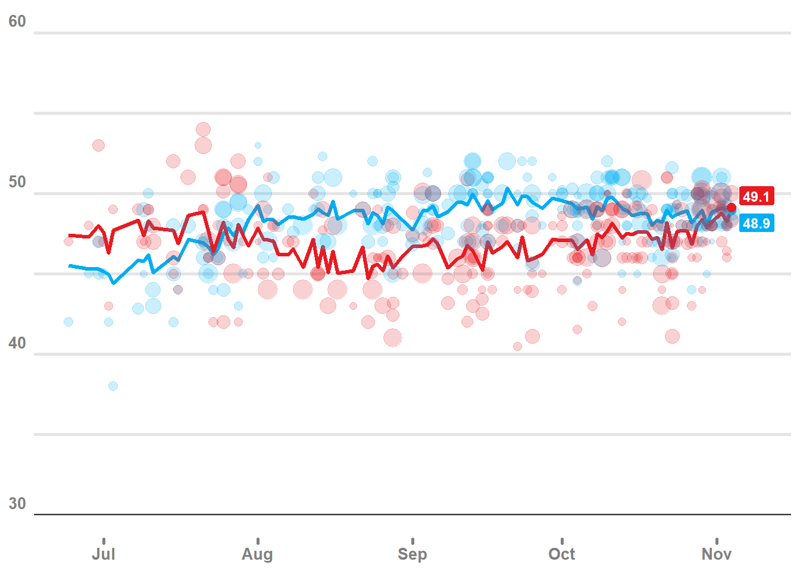

A (very, very late) discussion of election forecasting
R
Bayesian Statistics
Author
Gio Circo, Ph.D.
Published
January 13, 2025
Revisiting the 2024 Election
The 2024 election is over. Donald Trump beat Kamala Harris by about 2 million popular votes and 86 electoral votes. All the posturing, forecasting, and betting is over. So why am I posting about the election now?
Well, at the outset of the election I became interesting in running my own forecasting model. Nowadays there are plenty of folks running their own forecasting models - from individual bloggers to big news agencies like the New York Times. Poll aggregation is one of those things that is very “Bayesian” and I learned a lot about it reading through various books. To boot, I’ve always been a big fan of Andrew Gelman, as well as some other folks who do election and public policy forecasting - like Nate Silver and Elliot Morris. So I thought, “what the hell” and threw my hat into the ring. I held off on posting this because I figured there was already enough noise out there about the election, and maybe the world didn’t need one more person adding to the cacophony.
My Model
To keep it simple, I focused on the simplest kind of model - a poll aggregation model estimating national vote for the two-party candidates. This approach avoids a lot of additional complexity of estimating electoral college votes by not having to model state-level vote share, correlations between states, and many other things. This was truly just meant for a bit of academic fun. As a source of data, I used the very nicely curated tables supplied by 538 here, which was continuously updated during the election cycle. Helpfully, this data contains some other useful variables such as information about pollsters, and 538’s own ranking of pollster’s reliability.
For my model I applied filtering to get a subset of polls:
Only polls that included a Trump-Harris match up
Polls that were conducted just before Biden dropped out (6/1/2024)
Only polls including likely voters, registered voters, or adults
Removed overlapping polls
Polls with larger than 5,000 respondents
Dropping polls with more than 5,000 respondents is largely an approach to remove pollsters who “dredge” for lots of responses that are often typically of low quality. In total, this leaves us with about 255 unique polls in the 165 days between 6/1/2024 and 11/4/2024.
The poll aggregation approach
For the modelling approach I drew some inspiration from Andrew Gelman and others. Most of the current poll aggregation models apply some form of hierarchical linear modelling (HLM), combined with time trends, and often a “fundamentals” component. The general idea here is to partially pool information from many different pollsters, who are all utilizing slightly different samples of the population, with slightly different approaches.
For any individual poll we want to weight its contribution to the daily estimate based on known variables that affect responses (e.g: is this a partisan poll? is the poll registered or likely voters?), as well as “random” factors that sum to a distribution around a mean value (the distribution of responses by day, and by pollster). In addition, I wanted a model that also updated based on smooth time trends. While there are some nifty approaches using things like random-walk priors, I opted for a very simple cubic spine regression.
Fitting the models
To do this we fit the HLM component by applying fixed effects for partisan identification, the survey method (online, phone, or other), and the self-identified voting population (registered voters, likely voters, or adults). We apply varying intercepts for a day indicator, as well as for a pollster indicator. These varying intercepts apply partial pooling for each polling day as well as for pollster effects. In short, what this does is help pull polling estimates toward a group-level mean, and helps avoid any individual poll pulling the estimates too far in one direction - which is often referred to as “shrinkage”. I’ve actually written about this before in a blog post about estimating rare injury rates. We also fit a very simple cubic spline regression with default brms parameters. The idea here is to get smoothed estimates over time to account for a baseline trend of public opinion.
We do all the model fitting using brms using a binomial regression model in the form n_votes |trials(pop) where n_votes is the predicted number of votes for a candidate given a survey sample size pop. Finally, we also weight the polls based on their numeric grade assigned by 538. An example brms model looks something like the following below:
I likely deviated from accepted statistical dogma here by weighting the smoothing spline model and HLM using very ad-hoc approach. Early on I decided that I wanted my estimates to be mostly evenly controlled by the HLM and the smoothing spline, but I felt that the smoothing time trend would help eliminate a lot of the spikes on a day-to-day basic. I opted for a 60/40 weighting scheme that gave slightly more weight to the smoothing model. As you can see below, the combined “post-hoc” weighted predictions.

Smoothing spline model predictions

Hierarchical linear model predictions

Post-hoc weighted predictions (60/40)
For clarity, we can add all the individual poll results showing the estimated support for Harris and Trump, with the size weighted by the number of respondents (larger polls get larger circles). Shown below, on the last day before the election we estimate a popular vote of 49.1% for Trump and 48.9% for Harris. Including the uncertainty basically makes estimating the winner essentially a coinflip.

Predicted popular vote for Harris and Trump, as of 11/4/2024
Results
And below we have a table showing the estimated results for the last day of polling on 11/14/2025.
Election day estimates, national popular vote
party
end
ymin
median
ymax
DEM
2024-11-04
47.34
48.92
50.59
REP
2024-11-04
47.49
49.11
50.76
Looking at my estimates, compared to the final count (as of 1/9/2025) the point estimates my model came up with are quite close to the observed results (Trump at 49.9% vs 49.1%, Harris at 48.9% vs 48.4%). Getting within a percentage point of the true value is pretty good, I think for a somewhat half-baked model! That being said, for the purposes of predicting who would ultimately win the day of, the margin of error on the predictions give us essentially no additional confidence beyond a 50/50 chance. This is pretty consistent with a lot of other pollsters who had fancier models. In the end, it was a very close election that was decided by a relatively small number of voters in key areas.
Full Script
Code
library(tidyverse)library(brms)polls <-read_csv("https://projects.fivethirtyeight.com/polls-page/data/president_polls_historical.csv")set.seed(8372)# set up data, consistent with some other data sources# this is just national pollsmax_size =5000matchup =c("Harris", "Trump")# get just harris-trump matchupsharris_trump <-polls %>%group_by(poll_id, question_id) %>%summarise(all_reps =paste0(answer, collapse =",") ) %>%filter(all_reps %in%c("Harris,Trump","Trump,Harris")) %>%pull(question_id)# select data# only national polls where trump-harris are the options# remove polls that are overlappingall_polls_df <-polls %>%rename(pop = sample_size,vtype = population) %>%mutate(begin =as.Date(start_date, "%m/%d/%y"),end =as.Date(end_date, "%m/%d/%y"),t = end - (1+as.numeric(end-begin)) %/%2,entry_date =as.Date(created_at, "%m/%d/%y")) %>%filter(question_id %in% harris_trump,is.na(state),!is.na(pollscore),!is.na(numeric_grade), answer %in% matchup, end >as.Date("2024-06-01"), t >= begin &!is.na(t) & (vtype %in%c("lv","rv","a")), pop >1, pop <= max_size) %>%mutate(pollster =str_extract(pollster, pattern ="[A-z0-9 ]+") %>%sub("\\s+$", "", .),pollster =replace(pollster, pollster =="Fox News", "FOX"), pollster =replace(pollster, pollster =="WashPost", "Washington Post"),pollster =replace(pollster, pollster =="ABC News", "ABC"),partisan =ifelse(is.na(partisan), "NP", partisan),method =case_when(str_detect(tolower(methodology) ,"online") ~"online",str_detect(tolower(methodology) ,"phone") ~"phone",TRUE~"other"),week =floor_date(t -days(2), unit ="week") +days(2),day_of_week =as.integer(t - week),index_t =1+as.numeric(t) -min(as.numeric(t)),index_w =as.numeric(as.factor(week)),index_p =as.numeric(as.factor(as.character(pollster))),n_votes =round(pop * (pct/100))) %>%distinct(t, pollster, pop, party, .keep_all =TRUE) %>%select(poll_id, t, begin, end, entry_date, pollster, partisan, numeric_grade, pollscore, vtype, method, pop, n_votes, pct,party,answer, week, day_of_week, starts_with("index_"))# remove overlapping pollsall_polls_df <- all_polls_df %>%group_by(entry_date, pollster, pop, party) %>%arrange(desc(entry_date), desc(end)) %>%slice(1)# drop polls with combined 2-party vote share < 85%low_vote <- all_polls_df %>%group_by(poll_id, entry_date, pollster, pop) %>%summarise(total_votes =sum(n_votes), .groups ='drop') %>%mutate(prop = total_votes / pop) %>%filter(prop < .85) %>%select(poll_id, entry_date, pollster, pop)all_polls_df <-anti_join(all_polls_df, low_vote)# plot the 2 party pctall_polls_df %>%ggplot(aes(x = t, y = pct, color = party)) +geom_point(aes(size = pop, fill = party),shape =21, alpha = .2) +geom_smooth(aes(color = party)) +scale_color_manual(values =c("#00AEF3","#E81B23")) +scale_fill_manual(values =c("#00AEF3","#E81B23")) +scale_y_continuous(limits =c(30, 60)) +theme_minimal() +theme(legend.position ='none')# RUN MODELS# -------------------- #extract_posterior_predictions <-function(x){# get the median and 95% credible interval ypred <-posterior_predict(x) ypred <-apply(ypred, 2, quantile, probs =c(.025, .5, .975)) %>%round()data.frame(t(ypred)) %>%set_names(c("ymin","median","ymax"))}stack_extract_posterior_predictions_naive <-function(x1, x2, weights =c(.5, .5), return ="agg"){# average weighted predictions from two models pred1 <-posterior_predict(x1) pred2 <-posterior_predict(x2) pred_avg <- (pred1 * weights[1]) + (pred2 * weights[2])if(return=="agg"){ ypred <-apply(pred_avg, 2, quantile, probs =c(.025, .5, .975)) %>%round() out <-data.frame(t(ypred)) %>%set_names(c("ymin","median","ymax")) }elseif(return=="raw"){ out <- pred_avg }return(out)}stack_extract_posterior_predictions <-function(x1, x2){# get the median and 95% credible interval ypred <-pp_average(x1, x2, summary =FALSE) ypred <-apply(ypred, 2, quantile, probs =c(.025, .5, .975)) %>%round()data.frame(t(ypred)) %>%set_names(c("ymin","median","ymax"))}# politcal idxdem <- all_polls_df$party =='DEM'gop <- all_polls_df$party =='REP'# adjust for poll type, partisanbprior <-c(prior(normal(0, 0.5), class ='Intercept'),prior(normal(0, 0.5), class ='b'), prior(student_t(3, 0, 1), class ='sd') )sprior <-c(prior(normal(0, 0.5), class ='Intercept'),prior(student_t(3, 0, 1), class ='sds'))# rescaled polster weights, mean of 1W <- all_polls_df$numeric_grade/mean(all_polls_df$numeric_grade, na.rm =TRUE)W_dem = W[dem]W_gop = W[gop]# aggregation modelfit2.1<-brm( n_votes |trials(pop) +weights(W_dem) ~1+ partisan + method + vtype + (1| index_t) + (1| index_p),family ="binomial",data = all_polls_df[dem, ],data2 =list(W_dem = W_dem),prior = bprior,chains =4,cores =4,file ="data\\election_model\\fit2.1" )fit2.2<-brm( n_votes |trials(pop) +weights(W_gop) ~1+ partisan + method + vtype + (1| index_t) + (1| index_p),family ="binomial",data = all_polls_df[gop, ],data2 =list(W_gop = W_gop),prior = bprior,chains =4,cores =4,file ="data\\election_model\\fit2.2" )# using a cubic regression spline for smoothingfit2.1s <-brm(n_votes |trials(pop) +weights(W_dem) ~1+s(index_t, bs ='cr'),data = all_polls_df[dem, ],data2 =list(W_dem = W_dem),family ="binomial",prior = sprior,chains =4,cores =4,control =list(adapt_delta =0.99),file ="data\\election_model\\fit2.1s" )fit2.2s <-brm(n_votes |trials(pop) +weights(W_gop) ~1+s(index_t, bs ='cr'),data = all_polls_df[gop, ],family ="binomial",prior = sprior,data2 =list(W_gop = W_gop),chains =4,cores =4,control =list(adapt_delta =0.99),file ="data\\election_model\\fit2.2s" )# add predictions back to dataframe with weighted predictions# weight 1 = hlm, weight 2 = smoothing model# more weight on #2 = more smoothing# default is about 40% hlm, 60% smoothingweights =c(.4, .6)pred_dem <-cbind.data.frame(stack_extract_posterior_predictions_naive(fit2.1, fit2.1s, weights = weights), all_polls_df[dem,])pred_gop <-cbind.data.frame(stack_extract_posterior_predictions_naive(fit2.2, fit2.2s, weights = weights), all_polls_df[gop,])test <-rbind.data.frame(pred_dem, pred_gop) %>%mutate(across(ymin:ymax, function(x) (x / pop)*100)) %>%group_by(party, end) %>%summarise(across(ymin:ymax, mean)) %>%ungroup()plot1<-test %>%group_by(party, end) %>%summarise(across(ymin:ymax, mean)) %>%ggplot(aes(x = end)) +geom_line(aes(y = median, group = party, color = party), linewidth =1.2) +scale_color_manual(values =c("#00AEF3","#E81B23")) +scale_fill_manual(values =c("#00AEF3","#E81B23")) +scale_y_continuous(limits =c(30, 60)) +geom_hline(yintercept =30, color ='grey20') +theme_minimal() +theme(legend.position ="none",panel.grid.major.x =element_blank(),panel.grid.minor.x =element_blank(),panel.grid.major.y =element_line(color ="grey90", linewidth =1 ),panel.grid.minor.y =element_line(color ="grey90", linewidth =1),axis.ticks.x =element_line(lineend ="round", linewidth =1, color ='grey50'),axis.title =element_blank(),axis.text =element_text(size =10, color ='grey50', face ='bold'),axis.text.y =element_text(vjust =-0.5))plot1# labels for end pointsend_labels <- test %>%filter(end ==max(end)) %>%group_by(party) %>%slice(1)# w/o error barsplot1 +geom_point(data = all_polls_df, aes(x = end, y = pct, color = party, fill = party), shape =21, size =2, alpha = .2) # add point sizes and labelplot1 +geom_point(data = all_polls_df, aes(x = end, y = pct, color = party, fill = party, size = pop), alpha = .2) +geom_point(data = end_labels, aes(x = end, y = median, color = party), size =2.5) +geom_label(data = end_labels, aes(x = end, y = median, label =round(median,1), fill = party), color ='white', fontface ='bold', nudge_x =5, nudge_y =c(-.75,.75), size =3.2)# facet plotsplot1 +geom_point(data = all_polls_df, aes(x = end, y = pct, color = party, fill = party, size = pop), alpha = .2) +geom_ribbon(aes(ymin = ymin, ymax = ymax, group = party, fill = party), color ='white', alpha = .2)# difference on max dataraw_dem <-stack_extract_posterior_predictions_naive(fit2.1, fit2.1s, weights = weights, return ="raw")raw_gop <-stack_extract_posterior_predictions_naive(fit2.2, fit2.2s, weights = weights, return ="raw")# compute dem margin based on most recent 10 days worth of pollsdem_margin <- raw_dem / (raw_dem + raw_gop)max_date <-max(pred_dem$end)date_idx <-seq.Date(from = max_date,by ="-1 day",length.out =10)T <-as.numeric(rownames(pred_dem[pred_dem$end %in% date_idx, ]))mean(apply(dem_margin[,T], 1, function(x) mean(x > .5)))# 95% CI and mean # predicted share of 2-party votemean(apply(dem_margin[,T], 1, quantile, probs =c(0.025)))mean(apply(dem_margin[,T], 1, mean))mean(apply(dem_margin[,T], 1, quantile, probs =c(0.975)))# predicted % times that dem candidate wins popular vote# NOT the same as winning the election !!!mean(dem_margin[,T] > .5)hist(dem_margin)